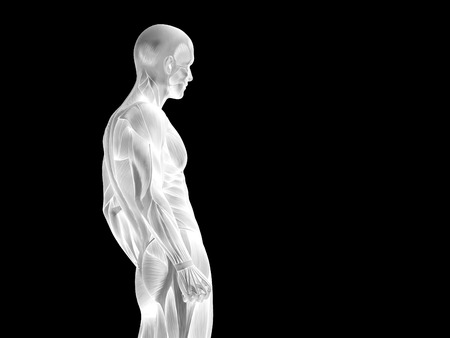

DESCRIPTION DE LA SURFACE CORPORELLE (BSA)

La surface corporelle (Body Surface Area, BSA en anglais) représente la surface totale de la peau recouvrant notre corps. Elle se mesure à partir de la taille et du poids à l'aide de formules spécifiques. Elle permet :
- Dosage des médicaments : utilisé pour certains traitements comme la chimiothérapie.
- Évaluation des brûlures : comparaison des lésions à une portion de la surface corporelle.
- Calcul du débit cardiaque : estimation de la capacité du cœur.
Parmi les nombreuses formules de calcul, la formule de DuBois et DuBois reste la plus utilisée :
BSA = 0.007184 × Taille0.725 × Poids0.425